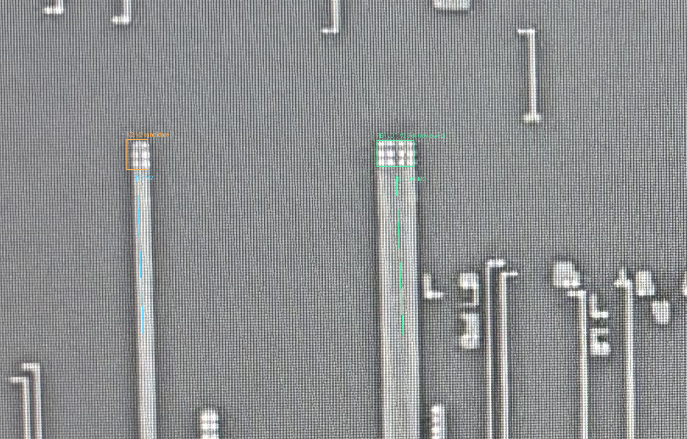
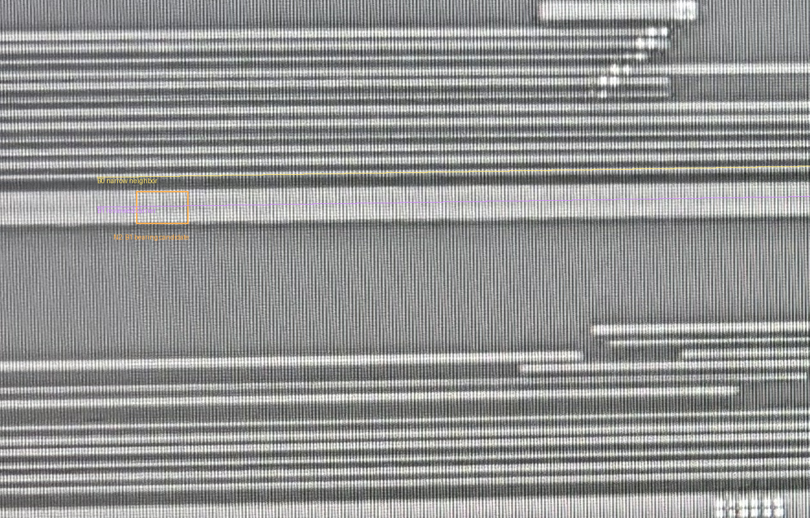
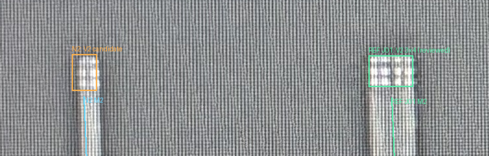
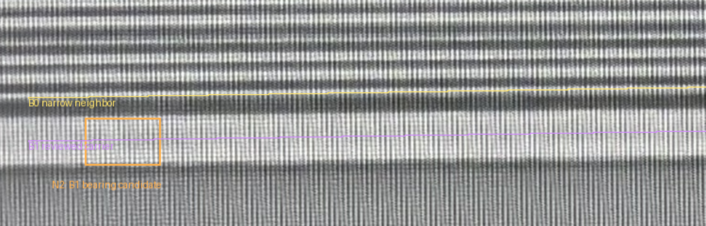
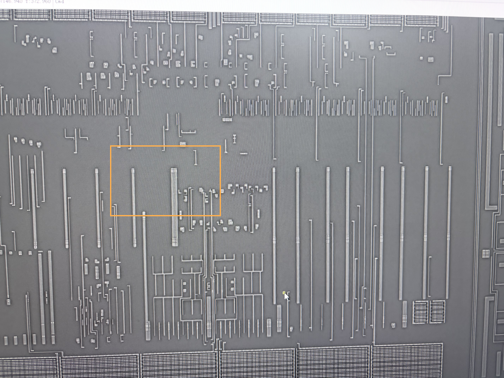
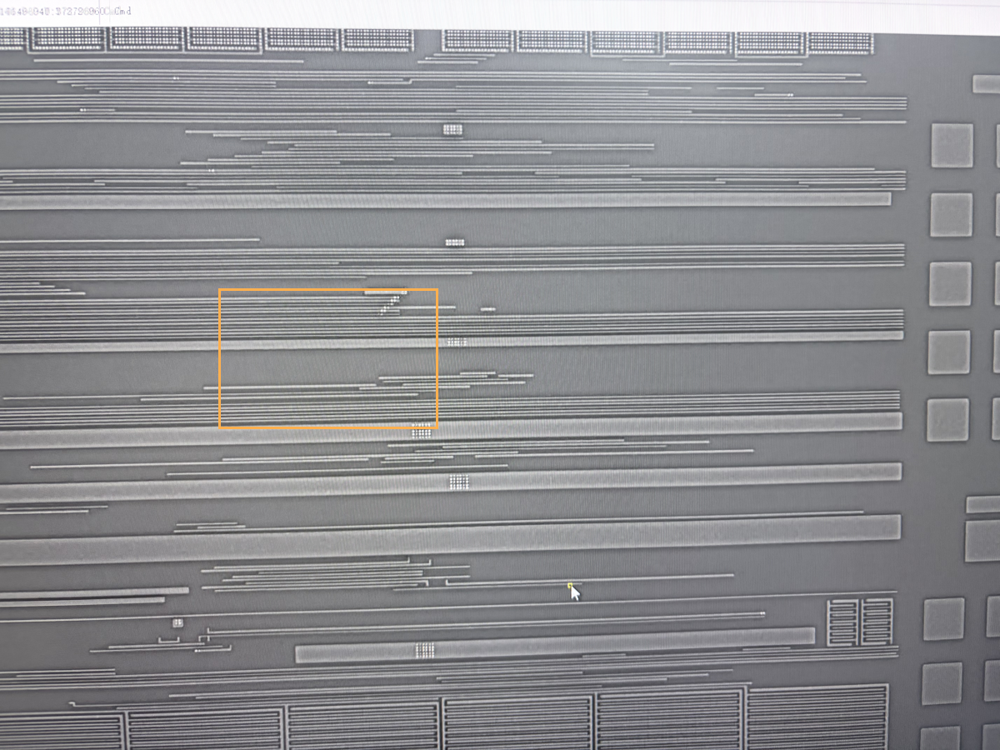

橙框是左侧窄M2的新接口N2；绿色框是右侧已经批准的J01参照（3×4 V2）。紫线标出已审B1宽母线，黄线是上方B0细线。
先在M2确认规则孔阵列；再比较它与J01端部的相对行列，以及M3宽母线的连续范围。新组与参照处在相近的端部行列，承载更符合B1。J01的旧批准不自动批准N2。
左侧橙框N2孔组是否为V2，并将这根窄M2接到紫色B1粗横向母线，而非上方黄色B0？只确认新增接口，不需要逐孔计数或重审右侧J01。
两张照片各用原生坐标，没有跨层叠图；M3橙框只是承载检查窗口，不是V2孔坐标。没有套用旧9对错误配准点。孔数、精确边界及向下延伸仍未知。现有33条导体及AA/POLY/CT没有改动。





